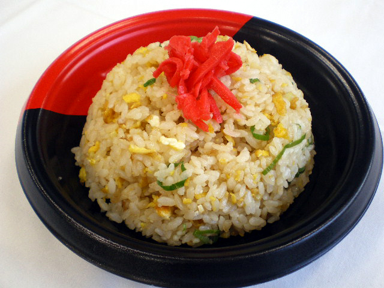

Fried rice
Ingredients
- Oil
- eggs
- Rice
- meat
- vegetables
Directions
- The rice should be kept in the refrigerator for 2 to 3 hours
- Add a little vegetable oil to the rice before frying mix well
- Rice with oil and egg mixture under the hot pot
- Then add salt and chopped green onion, stir fry

Recommended Recipes
Fried rice
Fired dumplings
Sweet and Sour Chicken
Here's a div!